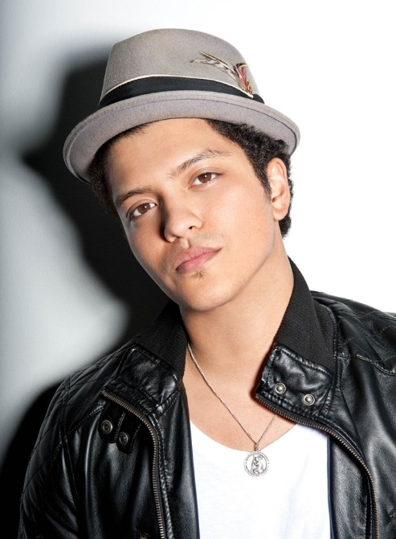

Bruno Mars
Peter Gene Hernandez (born October 8, 1985), professionally known by his stage name Bruno Mars, is an American singer-songwriter, record producer, voice actor, and choreographer. Born and raised in Honolulu, Hawaii, by a family of musicians, Mars began making music at a young age and performed in various musical venues in his hometown throughout his childhood. He graduated from high school and moved to Los Angeles to pursue a musical career. Mars produced songs for other artists, co-founding the production team: The Smeezingtons. 
Mars had an unsuccessful stint with Motown Records, but then signed with Atlantic in 2009. He became recognized as a solo artist after lending his vocals to the songs "Nothin' on You" by B.o.B, and "Billionaire" by Travie McCoy, which were worldwide successes, and for which he co-wrote the hooks. Mars' production formula allowed him, and his production team, to work with an assortment of artists from various genres.
His debut studio album, Doo-Wops & Hooligans, released in 2010, peaked at number three on the Billboard 200, anchored by the worldwide number-one singles "Just the Way You Are" and "Grenade", as well as by the single "The Lazy Song". The album was nominated for seven Grammy Awards, winning Best Pop Vocal Performance for "Just The Way You Are". His second album, Unorthodox Jukebox, released in 2012, peaked at number one in the United States, UK and other international markets. It won Best Pop Vocal Album at the Grammy Awards. The album spawned the international singles "Locked Out of Heaven", "When I Was Your Man" and "Treasure".
Throughout his singing career, Mars has won 2 Grammy Awards and sold more than 11 million albums and 68 million singles worldwide. Four of his singles are counted amongst the best-selling singles of all time. Mars is now regarded as one of the most successful solo artists in all over the world, landing 5 number-one singles on the Billboard Hot 100 ever since his career launched in 2010, faster than any male singer since Elvis Presley. In 2011, Mars was named one of Time Magazine's 100 most influential people in the world. In 2014, he was ranked number one on the Forbes 30 under 30 list. Mars was also nominated as Top Artist of the Year in May 2014 at the Billboard Music Awards.
Mars is known for his stage performances and retro showmanship, that usually include playing a variety of instruments such as electric guitar, piano, keyboards and drums, dancing and performing a wild range of musical styles, including reggae, soul and funk music.